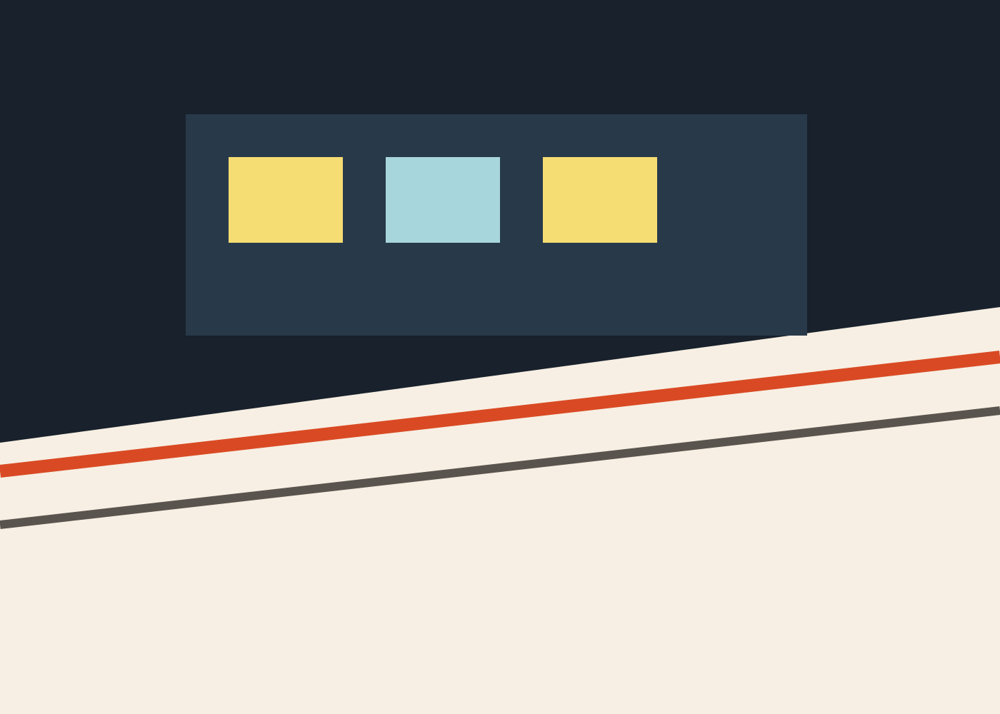
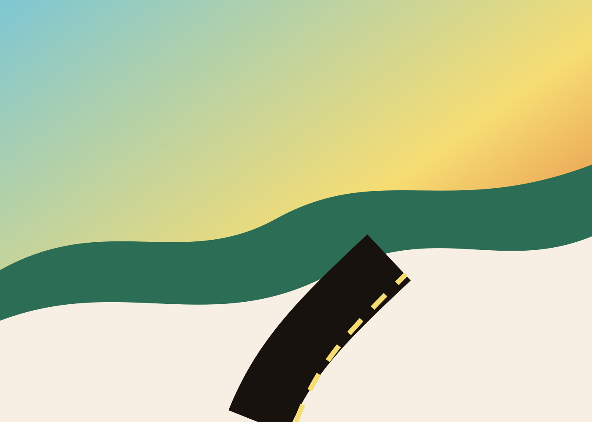

2026.04 / 镰仓

最近一次出发
我喜欢在天亮前抵达车站
那时候城市还没有完全醒来，行李箱的轮子声会显得很清楚。旅程从这里开始，不必急着证明什么。
Journey Index
2026.04 / 镰仓
2026.01 / 札幌
2025.10 / 敦煌
2025.06 / 重庆
Photo Wall
Selected Stories

最近一次出发
那时候城市还没有完全醒来，行李箱的轮子声会显得很清楚。旅程从这里开始，不必急着证明什么。
相册里的规则
一杯没喝完的咖啡、一张晒皱的票、朋友在路口回头的那一秒，往往比地标更像旅行本身。

下一页
网站里的每张照片都可以被替换，每段文字也可以继续生长。先把路铺开，故事会自己赶上来。